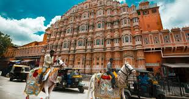
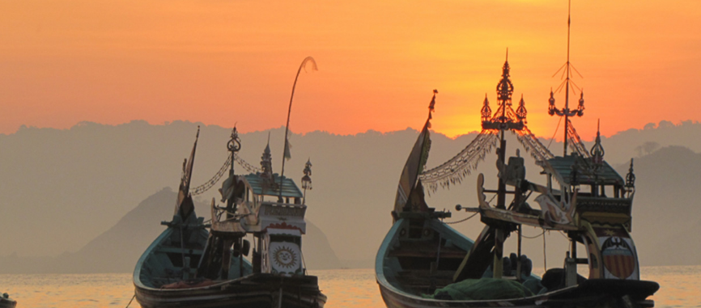

Apa Itu kakilangkah?

Portal kakilangkah adalah website perjalanan Banyak sudah cerita yang saya dapatkan dalam
perjalanan-perjalanan ini. Semoga saja diberikan kekuatan untuk menuliskannya kembali.
Karena hingga saat ini masih belum semua cerita itu tertuang dalam tulisan.
Tujuannya
Memberikan informasi tentang perjalan dengan budget murah.
Cerita perjalanan
Pesona Pantai Papuma yang Tersohor

Debur ombak dan heningnya suasana pagi kala itu di pantai Papuma, yang terletak di sebuah
tanjung berjarak sekitar 37 kilometer dari Kabupaten Jember serasa mengobati penat di
tubuh ini karena harus duduk di bis ekonomi dari Surabaya selama hampir 7 jam.
Tepat pukul 04.30 pagi saya tiba di sebuah penginapan kecil milik perhutani yang setelah
saya telusuri ternyata penginapan satu-satunya di kawasan ini yang dikelola Perhutani ini.
Belum puas mendaratkan tubuh ini di tempat tidur, semburat cahaya merah sudah mulai menyapa di ufuk timur,
seakan menyapa setiap insan untuk menyambutnya dengan semangat baru pada hari itu. Kamera dan
teman-temannya memang sudah saya siapkan di sebuah tas khusus sehingga tidak perlu menunggu lama,
kaki ini sudah menapak di pantai pasir putih tersebut.
Rasanya baru sebentar merebahkan badan di tempat tidur, salah satu teman saya sudah memberitahu
bahwa ikan bakar sudah di pesan untuk makan siang ini di pinggir pantai pasir putih. Rasanya sudah
tidak sabar menikmati kerapu dan kakap Bakar di bawah pohon yang rindang di pinggir pantai pasir putih
yang indah, setelah pemilik warung menghidangkan semua menu makan siang.
Hampir tak bisa pulang
Belum puas rasanya menikmati keindahan alam Tanjung Papuma, hujan pun turun membasahi bumi sore itu.
Begitu tiba di penginapan, kegiatan selanjutnya adalah berkemas. Tak lama saya kemudian sadar bahwa
lampu mati dan seketika teringat punya janji untuk menelepon supir taksi yang akan menjemput kami
di Tanjung Papuma pulang ke Jember.
Saya menjadi sedikit khawatir begitu melihat layar gawai yang bertuliskan “Emergency Call”. Pun hal
serupa di layar gawai teman-teman saya.
“GAWAAT…”, ucap saya dalam hati.
Hari sudah semakin gelap gulita, hujan rintik-rintik pun masih setia menemani kami petang itu.
Setelahnya, kami bertanya ke petugas Perhutani yang menjaga penginapan tersebut. Barulah kami ketahui,
jika lampu mati, maka semua tower BTS yang ada di sekitar juga ikut mati.
“Wah gawat ini, bagaimana saya harus menelepon bapak supir taksi ya!”, gumam saya lagi.
Tentang
Hi, saya Niaa.
Petualangan pertama adalah ketika masih berumur 11 tahun sudah diajak merantau ke Tegal oleh sang ibu dengan menumpang bis ekonomi dari jakarta, dari sanalah mungkin gejolak petualangan saya mulai muncul.
Saya selalu suka hal-hal baru.
Saya suka tersesat. Dengan tersesat saya sering melihat dunia baru yang belum pernah saya lihat sebelum nya. Dulu daerah paling romantis dan paling indah adalah puncak gunung. Namun, begitu kenal laut, pemikiran saya akan hal itu berubah.
Saya suka laut dan pantai yang sepi. Saya suka kesunyian.